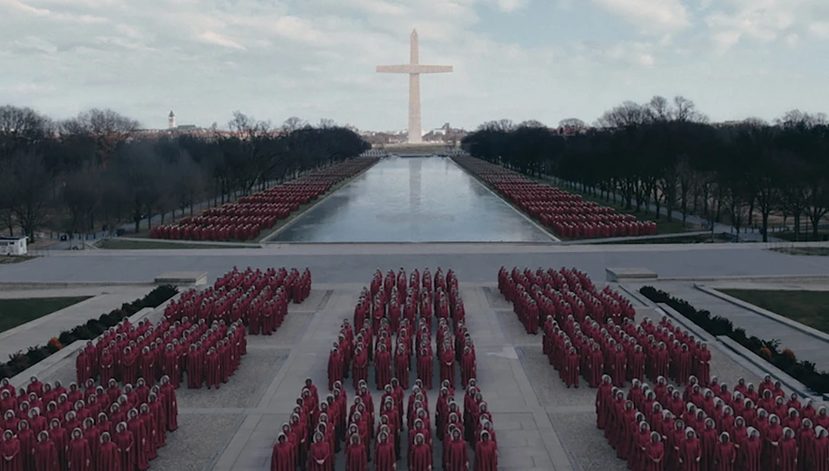
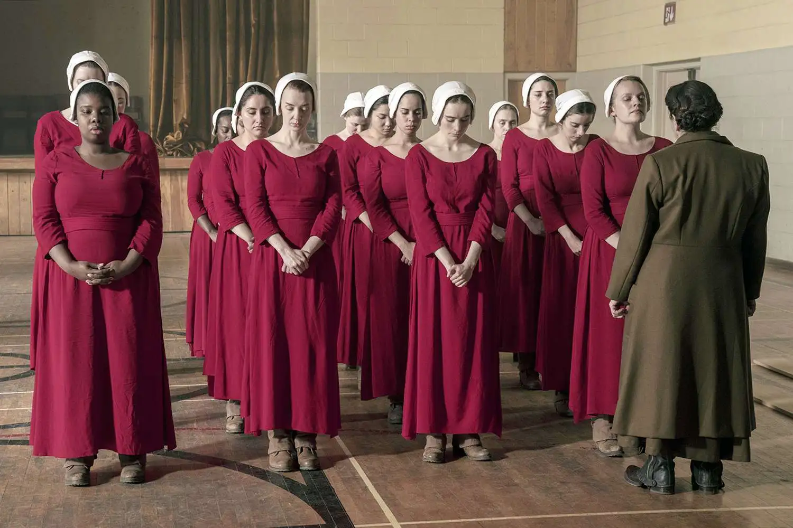
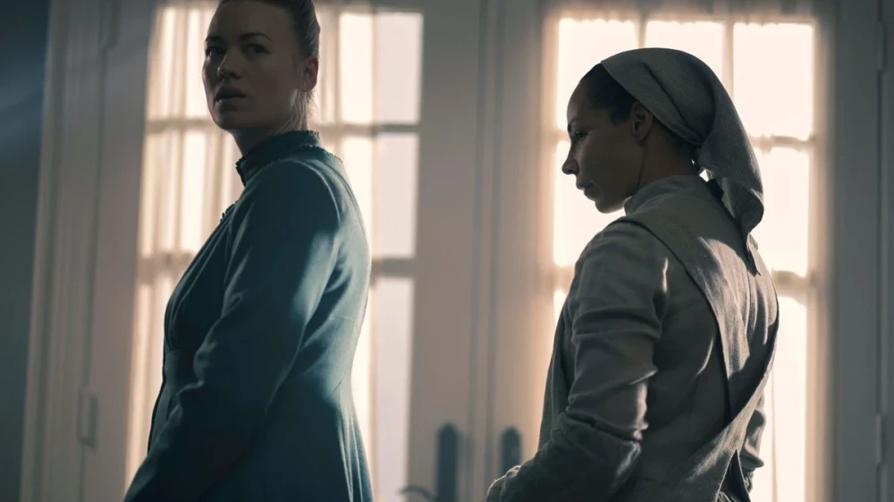
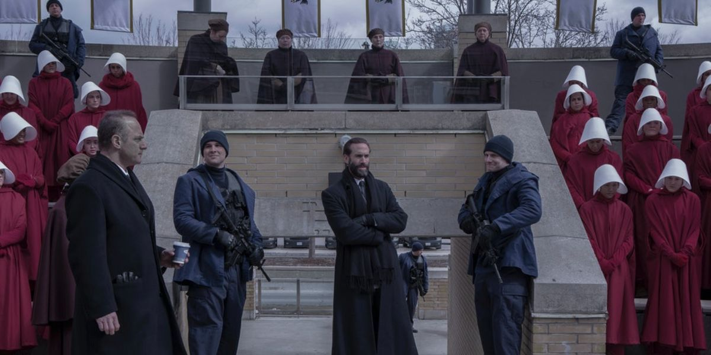

Esposas
Wives · Azul aguamarina
Pertenecen a la élite social por estar casadas con los comandantes que fundaron y gobiernan el régimen. Administran sus hogares y crían a los niños nacidos dentro de la clase dominante.
Bajo Su Mirada
Un régimen autoritario que se sostiene bajo los pilares de la fe y el miedo.
El régimen
La República de Gilead se organiza bajo una estricta teonomía militarizada y jerárquica.
El régimen clasifica a la sociedad en diferentes clases y funciones sociales. En el caso de las mujeres, su categoría determina por ley sus libertades y deberes, algo que también se representa visualmente mediante el color de sus vestidos.
Cada habitante ocupa un lugar establecido dentro de una estructura que convierte la religión en ley, la vigilancia en método de gobierno y la fertilidad en un recurso controlado por el Estado.

Sistema de castas
La vestimenta identifica la función, el nivel de privilegio y el grado de sometimiento que Gilead impone a cada mujer.
Wives · Azul aguamarina
Pertenecen a la élite social por estar casadas con los comandantes que fundaron y gobiernan el régimen. Administran sus hogares y crían a los niños nacidos dentro de la clase dominante.
Handmaids · Rojo y blanco
Son mujeres fértiles forzadas a la esclavitud reproductiva y asignadas a las casas de los comandantes. Allí son sometidas mensualmente a «la ceremonia» para engendrar hijos destinados a las familias de la élite.
Pierden su nombre y adoptan otro formado por el prefijo «De» y el nombre de su comandante. Su cofia y sus «alas» blancas ocultan el rostro y restringen la visión.

Aunts · Autoridad femenina
Reeducan, adoctrinan, entrenan y supervisan a las Criadas en los Centros Rojos. Son la única casta femenina autorizada a leer y escribir, aunque incluso ellas reproducen lecturas religiosas grabadas para sostener las apariencias doctrinarias.
Marthas · Gris o verde opaco
Son mujeres infértiles destinadas a la cocina, la limpieza y el mantenimiento de las residencias de la élite. Su aparente invisibilidad permite que muchas actúen como columna vertebral de Mayday, facilitando información, contrabando y fugas.

Econowives · Clase trabajadora
Conforman las familias de clase baja y representan la mano de obra barata del país. Las Economujeres deben asumir por sí mismas las tareas domésticas, la procreación y la crianza.
Jezebels · La doble moral
Son mujeres obligadas a prostituirse en burdeles clandestinos reservados para los comandantes. Su existencia revela la hipocresía de una élite que infringe en secreto las normas que impone brutalmente al resto de la sociedad.
El brazo disciplinario
Recurren a castigos físicos, mutilaciones y torturas para quebrar la voluntad de las Criadas. Justifican esa violencia mediante interpretaciones literales de las escrituras, como cuando castigan a Janine basándose en Mateo 5:29.
Figuras como la Tía Lydia Clements están convencidas de que su brutalidad protege a las Criadas y resulta necesaria para la supuesta salvación espiritual de la sociedad.
Poder y vigilancia
La jerarquía masculina distribuye el gobierno, la vigilancia y la fuerza armada entre cuatro funciones principales.

Altos cargos políticos, legisladores, jefes diplomáticos y militares encargados de gobernar y establecer las normas del Estado.
Integran la policía secreta. Vigilan a la población y se infiltran para detectar cualquier indicio de rebelión o disidencia.
Patrullan las fronteras y rastrean a quienes intentan escapar clandestinamente de Gilead.
Jóvenes reclutas asignados al patrullaje, la seguridad vial y la vigilancia doméstica en las residencias de los comandantes.
La grieta en el sistema
La red Mayday es el movimiento clandestino y revolucionario que combate para desmantelar el régimen totalitario de Gilead.
Emily Malek le revela a June la existencia de la red. Alma se convierte después en su primer enlace directo y June termina asumiendo un papel fundamental de liderazgo.
Mayday mantiene activos en puestos estratégicos. Ava, bajo la identidad de la Tía Phoebe, y la joven Daisy participan en operaciones encubiertas dentro de las instituciones de Gilead.
La resistencia continúa activa en Canadá. Lily, una ex-Marta, y Ellen se encuentran entre las figuras que coordinan el movimiento fuera de las fronteras.
Joseph Lawrence se sacrifica para destruir un avión ocupado por líderes de Gilead. Nick Blaine también muere en este sabotaje a favor de la resistencia.
Religión convertida en ley
No son adornos superficiales: forman la columna vertebral teológica, legal e institucional de Gilead. El régimen manipula pasajes bíblicos para justificar la opresión de género, el control de la natalidad y los castigos físicos.
La justificación para la casta de las Criadas y el ritual de violación mensual procede de Génesis 30:1-3. Gilead toma la historia de Raquel, Bilha y Jacob y la institucionaliza como un sistema estatal de esclavitud reproductiva.
También se alude a Sarai y Agar. De estas historias proviene el nombre del Centro Rachel y Leah, donde las Criadas son adoctrinadas y controladas.
En el Antiguo Testamento, Galaad es una región montañosa y fértil situada al este del Jordán. Su nombre se vincula con una «colina del testimonio» y con el bálsamo de Gilead, pero el régimen subvierte esa asociación con la sanación.
Los Hijos de Jacob toman su nombre de los doce hijos del patriarca que dieron origen a las tribus de Israel, buscando presentar el golpe de Estado como una restauración sagrada.
Las Martas reciben su nombre del relato de Lucas 10:38-42. Gilead instrumentaliza la asociación de Marta con las tareas domésticas para imponer una servidumbre de por vida.
El nombre del burdel clandestino alude a la reina fenicia asociada con la idolatría y la corrupción. Esa elección expone el cinismo y la doble moral de la clase gobernante.